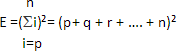

Naviguer dans le site:
Geodfroy Harold Hardy est un mathématicien allemand né en 1877. Connu pour ses travaux restés dans la postérité, il avait une vision très pure des mathématiques. Il fut notamment le professeur d’Alan Turing qui déchiffra le « code d’Enigma », machine qui codait les messages allemands pendant la seconde guerre mondiale. Le problème de la prévalence des allèles au sein d’un gène lui est posé par Reginald Punnet, un généticien allemand, il travaillera seul sur sa loi dont la date exacte est inconnue. Hardy n’a jamais travaillé en collaboration avec le médecin allemand Weinberg, seulement son nom a été associé à la loi, alors qualifié de loi d’Hardy, après que l’on ait découvert que l’allemand avait déjà formulé la loi de manière indépendante en 1908.
Pour appliquer l’équilibre d’Hardy-Weinberg, on suppose plusieurs hypothèses de départ:
Si ces hypothèses sont vérifiées on peut alors appliquer l’équilibre d’Hardy-Weinberg avec une précision relativement bonne.
Lorsque les conditions précédentes sont vérifiées, on peut appliquer l'équilibre suivant à une population pour connaître la probabilité que la génération suivante ait deux allèles p, deux allèles q ou soit hétérozygote
Soit P et Q deux allèle d’un gène quelconque X, soit P(P)=p et P(Q)=q, les probabilités respectives de répartition de ces gènes. On a alors p² +2pq +q²=1
Par conséquent, on obtient:
On considère une cellule somatique contenant un gène avec un allèle récessif Q et un allèle dominant P. La probabilité d’être porteur de P est donc : P(P)= P3 + P1= 2pq + p² Celle d’être atteint par Q (et donc de posséder l’allèle Q en deux exemplaires) : Q= q².
Pour deux allèles codominants, la probabilité de posséder deux fois l’allèle P, et donc de posséder le caractère correspondant à cet allèle du gène sera : P(1)= p². Celle de posséder deux fois l’allèle Q, et donc de posséder le caractère correspondant à l’allèle Q sera : P(2)= q² Celle d’avoir coexpression (c’est à dire que les deux allèles codominants sont présents et qu’ils donnent un nouveau caractère différent des deux allèles P et Q) sera : P(PQ)= 2pq
L’obtention de ces résultats permet de calculer la probabilité de l’apparition de l’allèle correspondant en connaissant le taux de présence du premier allèle dans une population donnée. L’équilibre d’Hardy-Weinberg nous permet, d’après les parties précédentes, de calculer les probabilités des différents gènes possibles.
En exploitant ces résultats on peut créer un graphique exprimant P(Q) , P(P) et P(PQ)
Outre les gènes dialléliques , il est possible d’étendre la loi d’Hardy-Weinberg aux gènes polyalléliques . Ainsi on a pour 3 allèles on a p + q + r = 1 avec p, q et r trois fréquences d’allèles .
Au niveau génotypique , on a donc (p + q + r )²=1 , cela équivaut à p² + 2pq + 2qr + 2pr + r² + q²=1
Ainsi pour un nombre n d’allèles au sein d’un gène , les fréquences génotypiques seront exprimées par l’équation suivante: 
On compte six hypothèses de départ, qui sont autant de limites à l’application de la loi puisque dans le cas où une des hypothèses de départ n’est pas vérifiée, une approximation existe lorsqu'on applique strictement la loi. Or les hypothèses de départ étant très restrictives, notamment l’hypothèse de panmixie (les individus se reproduisent entre eux de manière aléatoire) qui n’est pas vérifiable pour l’homme, ou encore l’absence des mutations sur le gène observé puisque les mutations sont omniprésentes dans les cellules humaines: ce sont elles qui permettent la diversité génétique.
Une étude portée sur 730 aborigènes australiens et utilisée par l’université de Lyon donne les résultats suivants : 22 sont porteurs de AA, 216 sont hétérozygotes donc porteurs de Aa et 492 sont porteurs de aa. On peut alors calculer la fréquence des allèles A et a: soient les fréquences P(A) et P(a).
P(A) = (P(AA)+P(Aa)/2)/EffectifTotal P(A) = (22 + 216/2)/730 = 0.178 P(a) = (P(aa)+P(Aa)/2)/EffectifTotal P(a)= (492 + 216/2)/730 = 0.822
D’après la loi d’Hardy-Weinberg, on peut alors calculer les effectifs théoriques alléliques suivants: P(AA)= (P(A))² * 730 = 23.1 P(Aa)= 2 * P(A) * P(a) * 730 = 213.6 P(aa)= (P(a))² * 730 = 493.2
Calculons l’erreur relative E: E(A)=( P(AA)théorique - P(AA) réelle)/P(AA)théorique E(A)= 0.0476 E(A)= 4.76% soit moins de 5%
E(Aa) =(P(Aa)théorique-P(Aa)réèlle)/P(Aa) théorique E(Aa) = -0.0112 E(Aa) = -1.12 % soit moins de 5%
E(aa)= (P(aa)théorique- P(aa) réèlle)/P(aa)théorique E(aa)=0.0024 E(aa)= 0.24% soit moins de 5 %
D’après ces calculs, la loi d’Hardy-Weinberg peut donc être appliquée avec une erreur relative inférieure à 5%.
La loi d’Hardy-Weinberg nous donne donc une bonne approximation des fréquences alléliques possibles au sein d’un même gène, elle est donc applicable au cas de la mucoviscidose.